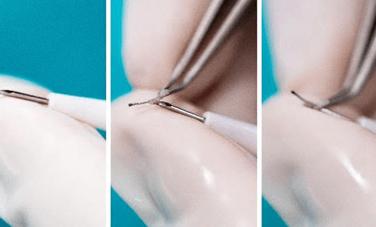
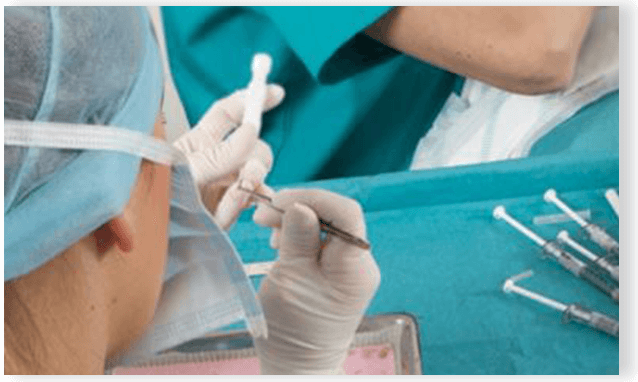
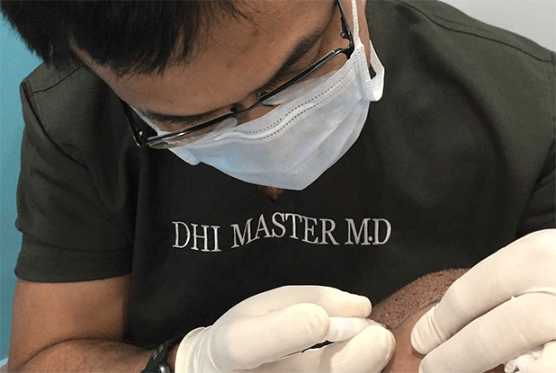
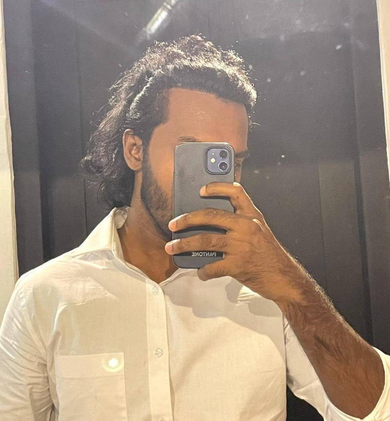
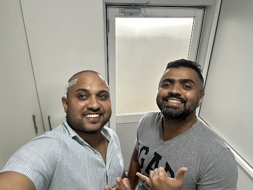
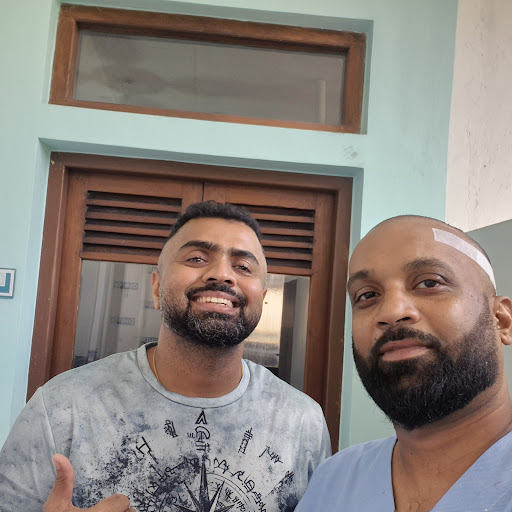
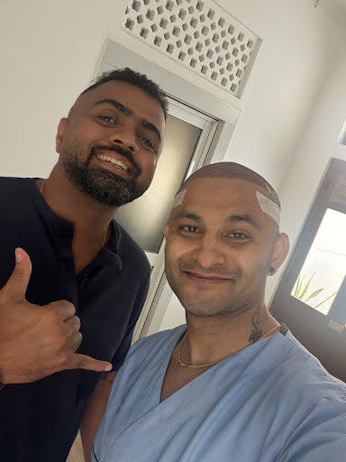
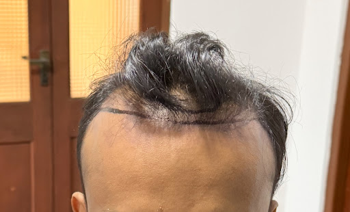
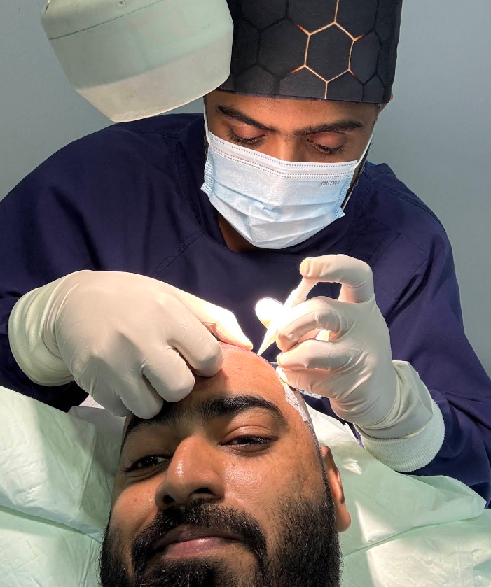
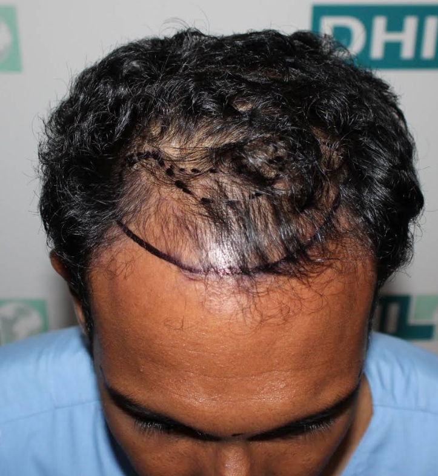

HAIR TRANSPLANT
Restore hair on the scalp for men and women with DHI's proprietary technique. Ideal for receding hairlines, crown thinning, and pattern hair loss—performed entirely by certified DHI doctors.
LEARN MORENatural, permanent hair restoration with Direct Hair Implantation™ — the safest, most advanced technique for men and women.
DHI Sri Lanka is the Colombo clinic of DHI Medical Group, offering doctor-led Direct Hair Implantation™ for men and women. Operating in Colombo since 2014, we bring over 12 years of local experience in hair restoration, backed by DHI’s 56 years of global experience.
Restore hair on the scalp for men and women with DHI's proprietary technique. Ideal for receding hairlines, crown thinning, and pattern hair loss—performed entirely by certified DHI doctors.
LEARN MOREFill patchy cheeks, define your goatee, or rebuild a full beard with single-follicle precision. Beard restoration uses the same DHI implantation method for natural direction and density on the face.
LEARN MORERestore shape, symmetry, and fullness to sparse or missing brows. Fine graft placement matches natural brow angle and growth—popular after over-plucking, scarring, or genetic thinning.
LEARN MOREDHI Medical Group has developed its proprietary technique Direct Hair Implantation (DHI) that gives natural results with maximum growth while ensuring Client safety. The DHI method of hair transplant depends on the use of a specially developed tools, implanters and punches that enable surgeons to have complete control on direction, angle and depth of hair implanted while also providing greater density.
READ MORE
DHI Medical Group has over the past 56 years treated more than 200,000 hair loss sufferers. The learnings have been captured and catalogued in Standard Operating Procedures that help us create the art of hair restoration into a replicable science.
Every DHI clinic, surgeon and employee undergoes a comprehensive training on these protocols and must adhere to the processes in the SOPs certified by the UK's Care Quality Commission and ISO.
READ MOREThe DHI training program for surgeons is one of a kind and participants must pass several tests before they are certified to be able to perform procedures in DHI clinics.
DHI Medical Group constantly monitors each surgeon's adherence to defined DHI protocols even after they are certified. Every single procedure is assessed by a group of Medical Directors to drive accountability in its surgeons.
READ MORE
Amongst the many principles that DHI follows to offer the best possible treatment to its customers is the promise that Doctors exclusively perform the entire hair transplant procedure. The nurses that work with the doctor are charged with assisting them only.
This is at odds with the industry's practice of getting nurses to perform parts and in many cases the entire procedure.
READ MORE
Get a free diagnosis of your hair loss from a DHI-certified doctor — no obligation.
DHI has developed a scientific diagnostic protocol that is used to identify the causes of hair loss. Every Client is first assessed by a doctor using DHI's proprietary diagnosis system to identify what treatment plan they will best respond to.
DHI has developed unique protocols on Hair Growth Factor treatments that help in preventing hairloss. This stem-cell based treatment rejuvenates hair follicles and slows down the hair loss process.
DHI offers multiple solutions to clients depending on their stage of hair loss. Each treatment option or combination of treatments is aimed at restoring an age appropriate, natural look for the client.

Dr Amila Fernando leads hair restoration procedures at DHI Sri Lanka's Colombo clinic, holding an MBBS from China Medical University. As part of DHI's global medical network — which has treated over 500,000 clients across 75+ clinics worldwide — Dr Fernando brings extensive hands-on experience treating Sri Lankan clients, performing every procedure personally from diagnosis through implantation.
Real DHI Sri Lanka clients share their hair transplant journey. Swipe through and tap play.
Speak to our team today and take the first step toward your hair restoration.
DHI is our proprietary implantation method: follicles are placed one by one with the DHI implanter, without creating slits or channels first. That means better control over direction and density, high graft survival when combined with our extraction protocols, and natural hairlines—unlike older strip (FUT) methods or technician-heavy workflows common with standard FUE.
Yes. Many women experience diffuse thinning or pattern loss. After a medical diagnosis, DHI can restore density where donor hair is available. Eyebrow restoration is also popular for clients who want fuller, natural brows. Your doctor will confirm candidacy at consultation.
Most clients resume light daily activities quickly. You will receive written aftercare from your clinic. Transplanted hair follows a normal growth cycle: early shedding can occur before new growth becomes visible over the following months. Your team will review timelines at your follow-ups.
Yes. A core DHI principle is that licensed DHI doctors perform extraction and implantation; assistants support but do not replace the surgeon. This aligns with our Total Care System™ training and global quality standards.
You can book online, call our clinic, or use our consultation page for a remote diagnosis where offered. We will confirm your appointment and any preparation steps before your visit or video session.
DHI procedures start from LKR 440,000 and may increase with the number of hairs implanted. The consultation fee is LKR 3,000. You can pay by cash, credit card (Mastercard, Visa, AMEX) or online bank transfer.
See what our clients are saying about us on Google.

"I had a hair transplant today. To be honest, I am very happy with the way it went. I got seven thousand hairs done. Really good service. The important thing is Dr. Amila Fernanda can speak Tamil. She doesn't have much pain. In terms of money, it is less than Turkey. No one needs to be afraid. The transplant will be done easily. I am confident of a positive outcome"
Read more
"I am Pasindu,I had my hair transplant in August 2024 at DHI I truly want to thank Dr Amila Fernando who I believe is one of the best hair surgeons in Sri Lanka. I also appreciate Dr Roshan for his excellent management and support .Dr Amila guided me throughout the surgery and kept me calm the whole time. I still remember how supportive he was during the procedure I also want to thank the DHI staff especially Mario who was very kind and helpful.I did my hair transplant in August 2024 at the age of 24. I’m not an influencer this is just my real personal experience. I’m sharing it honestly to help anyone who is thinking about it or feeling unsure I am totally happy with my hair now and it looks perfect,This is my result two years after my hair transplant."
Read more
"If you’re considering a hair transplant in Sri Lanka, I highly recommend DHI Sri Lanka. They are truly one of the most well-reputed places for hair restoration, and my experience with their team has been excellent. What really stood out to me was the kindness, professionalism, and genuine care of the staff. They are always approachable and ready to help whenever you need them, which makes the entire experience much more comfortable and reassuring. Forget the myths and misconceptions about hair transplants, take the time to get the right information from the professionals and make an informed decision. For me, the journey has been about much. Thank you very much Dr. Amila Fernando and entire team. Hats off for your great service."
Read more
"DHI Colombo - Best Experience 💯 I had my DHI Hair Transplant done on July 2nd at DIH. I have grown close to 5000 hairs. I also did my job very easily The staff is very friendly. The doctor took great care of me. The pain is not a problem. The procedure was completed smoothly from 9 to 3. They provided me with Lunch + Medicine + Aftercare. The doctor gave me some great advice🫣, that advice is very important. So I can't imagine who I was this morning and who I am now 🤔 🙂 DHI made that difference. Special thanks to Dr. Amila If you are looking for a Trusted DHI Clinic in Colombo, I recommend this one. Thank you DHI Colombo Team 🙏"
Read more
"Hi i am Naveen i am from India and i did my hair transplant today from DHI COLOMBO First of all i must say best place for hair transplant i came from India specially for hair transplant. All the staff are very professional and very good they know there work very well very clean and hygienic specially thanks to Doctor Amila Fernando he is really a pro very professional knowledgeable friendly pro on his work he did the work awesome thanks to him All the staff very supportive even clinic off day also they guide me and helped me They are best."
Read more
"I wanted to share my 1-year progress after my hair transplant at DHI with Dr. Amila and his amazing team. Over the past year, the results have exceeded my expectations. I previously shared photos from before the transplant, the procedure day, 14 days after, and my 1-month progress. Today, I’m excited to add my 1-year update photo, and I can honestly say I’m extremely happy with the outcome. My hair has grown in fully, the density looks great, and the hairline is very natural. Most importantly, the results blend perfectly with my existing hair, giving me a much more confident appearance. Friends and family are often surprised when I tell them I had a hair transplant because the result looks so natural. The entire journey—from consultation to aftercare—was handled professionally by Dr. Amila and the DHI team. Their expertise, attention to detail, and ongoing support made the experience smooth and stress-free. A big thank you to Dr. Amila and everyone at DHI for helping me achieve such an amazing transformation. I highly recommend DHI to anyone considering a hair transplant. This has been one of the best decisions I have made, and I couldn’t be happier with my 1-year results."
Read more
"Did my transplant with dr. Amila and from the reservation till the procedure the process was very smooth and professional.. i recommend their service to the patients suffering from hairline receding issue.. top notch service from the corresponding nurses as well. Do visit the clinic for best results 🫡💯"
Read more
"I got my DHI hair transplant in around June 2024 while still in my early 20s. My parents and even the clerk at DHI told me it's too early or it doesn't look that bad but I was stubborn and insisted to get it. It was one of the best decisions of my life. I can't remember the exact details but what they do in order is: 1. Shave the entire back of your head and shave off 1 cm from the front of the head; the latter is done to increase the volume of hair at the front of your head in a natural-looking manner. They won't need to cut the hair at your sides or at the top of your head though. 2. They sedate the entire back of your head while you lie flat on your stomach on a stretcher. Anyway, after sedating your head, it will feel as if turned to stone lmao. The hair extraction is not painful and I was asleep through most of it. They took around 2000 hair follicles (3000 individual hair strands) from the back of my head within like 3 hours I think. 3. Afterwards they clean and bandage the back of your head, and then they sedate the front area of your head. While the sedation kicks in, you get a lunch break with delicious food. 4. For the next 3 hours or so, you'll be lying on your back on the stretcher. The nurse will hand the surgeon one follicle at a time and he will insert it into the front of your head. It's not painful but definitely a weird feeling. If you feel some pain, the surgeon will sedate that area more. The surgeon I had was really easy to talk to. We talked about anime for an hour or so while he did the transplant lol. The nurse was also really nice and pleasant. 5. After that's over, the nurse will give you painkiller pills because the physical pain of the transplant will start to set in as the sedation wears off. The back of your head won't hurt much but oh my god the front will be excruciating lmao so take many painkillers. 6. Before you leave, they will give you this big spray bottle of saline which you are supposed to spray on the transplanted region every 30 minutes or something. I was in too much pain to do it myself so I had to ask my mother to do it. 7. For the next 2 weeks, you're supposed to spray the saline every 30 minutes. You don't need to spray it while you sleep of course. When you sleep, you might need to tie yourself up because you don't want your hands or the pillow or anything at all to touch the tranplanted region because it's extremely sensitive and fragile for that time. Also it will be incredibly painful to move your eyebrows or your forehead during this time so don't move them. 8. After a week, the transplanted region will be covered with scabs but don't try to scratch it as it should be allowed to fall away naturally. Don't workout or sweat either. They'll give you a booklet explaining everything to do and to avoid. 9. After 2 weeks, you can return to normal life. The new hairs will start growing by the 3rd week or so. 10. It's good if you could take Finasteride 1mg everday from then on to prevent any future hair loss. I paid a total of around Rs. 600,000 for the whole thing, including an advance payment of Rs. 50,000. It's a lot but this is a LIFETIME procedure. It was COMPLETELY worth the money, time, and pain imo. Also I want to seriously praise DHI Colombo for how insanely professional and ethical they were. They told me exactly what they will be doing, how they will be doing it, what can be realistically achieved, etc from the beginning. One time the main doctor felt like I was having second thoughts, so he offerred to refund me the entire Rs. 50,000 I had paid as an advance if I wanted to cancel the procedure. I declined and did the procedure but him asking me that really showed that he cared more about his patients than money. I have attached the "before vs after" photos below. The "before" photos were taken a month before the transplant while the "after" photos were taken almost 2 years after the procedure to see the final permanent effect. It definitely does not take 2 years for your hairline to look like the "after" photos though; it'll take like 3 to 4 months iirc."
Read more
"I recently did my hair transplant through DHI and the staff is very friendly dr Amila who perform the surgery is very talented and friendly person who done the surgery with precision and less pain. The tratment was not painful as I thought and could be able to perform my daily work as usual from next day(with relevant to the after care guide lines)"
Read more
"The experience of getting a hair transplant at DHI was really good. While the transplant was being done, I had the opportunity to have a little chat with Doctor Amila. We talked a lot about what is happening in the industry, especially about music and dubbing. 😄 Doctor Amila also has great confidence that he can sing! 😂But I didn't say much about it, because I didn't want to hurt DCA's feelings. But I have to say one thing… The transplant was done by the Doctor! 👏😂 What a fun dial. The whole process was really a good experience. I was able to stay very comfortable. The work went smoothly, with full fun, and the process was smooth and easy. If anyone is afraid of getting a transplant, don't be afraid. DHI does the job beautifully. Amila is a great doctor. Finally, I would like to thank the entire team at DHI for giving me this wonderful experience. Everyone took good care of me and did the job professionally. Good luck DHI"
Read moreTalk to a DHI hair specialist directly — call, WhatsApp, or book an online consultation.